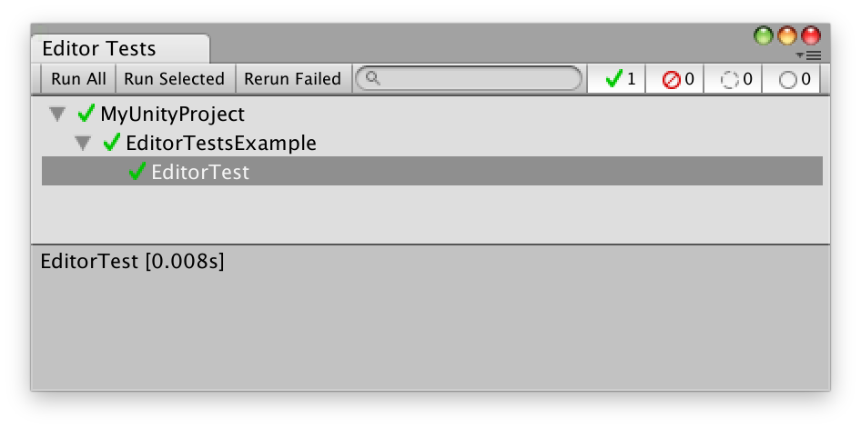

The Editor Tests Runner is an implementation of the open source NUnit library - a well-known unit testing library for .Net languages. More information about NUnit can be found on http://www.nunit.org/. The implementaion is based on version 2.6.4.
If you are new to NUnit please visit NUnit’s Quick Start guide to get started. This article demonstrates the development process with NUnit in the context of a C# banking application.
To start your experience with testing in Unity, open the Editor Test Runner window. If no tests are present in your project, you will be given an option to create a simple test as an example. You can create an editor test file also from the menu (Assets / Create / Editor Test).
The Editor Test Runner uses NUnit library for authoring and running the tests. Your editor tests should be place under Editor folder (see Special Folders for more information). The runner will scan the assemblies (including external assemblies included in the project that reference nunit.framework library) and generate a list with tests that were located.
The advantage of the Editor Tests Runner integrated with the editor over a test runner from an IDE (like MonoDevelop or Visual Studio) is the possibility to invoke certain Unity API. Some Unity APIs will not be accessible if accessed outside of the editor (e.g. instantiating GameObjects). The tests are executed in the editor, in non-play mode, all in one frame. It is not possible to skip a frame and/or execute an API that requires skipping frames.
The code you execute via the test runner will directly affect your currently opened scene. For example, if you instantiate a GameObject, it will be persisted on the scene. Most of the times such behaviour is undesired. The test runner is integrated with the Undo system and will try to undo the changes after the run. In order for that to happen, you need to register every undoable change in the Undo system. Note: Undoing changes may take extra time to execute. As an option, the runner can execute tests on a new scene. When this option selected, before each run the tests runner will open a new scene, execute tests and reopen the original scene. This may prompt the user to save the scene (unless Autosave scene option is selected).

At the bottom of the test list (or on the side, depending on the preferences) a test result preview is available. It shows the execution time of the test, the error and exception that has been thrown during the run of the test and the messages that has been logged.
Additional options are available in the window’s menu (top right corner of the window):
It is possible to run the editor tests in headless mode (using the command-line). In order to do that, run unity with following arguments:
Example:
Run all editor tests from the project:
>Unity.exe
-projectPath PATH_TO_YOUR_PROJECT
-runEditorTests
Run all editor tests from the project containing “Player” in the name and place the result file in C:\temp\results.xml:
>Unity.exe -runEditorTests
-projectPath PATH_TO_YOUR_PROJECT
-editorTestsResultFile C:\temp\results.xml
-editorTestsFilter Player
The editor will exit with a return following code according to the result:
On Windows, in order to read the result code of the executed command, run following:
start /WAIT Unity.exe ARGUMENT_LIST
This will wait for the execution of the command to finish and allow you to read the return code from ERRORLEVEL variable.